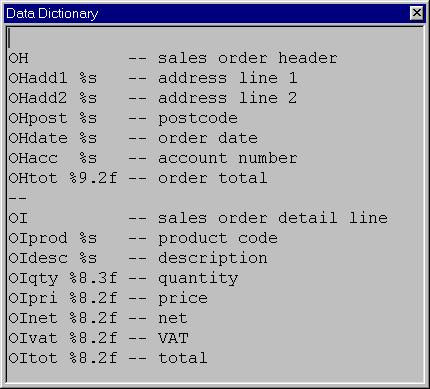
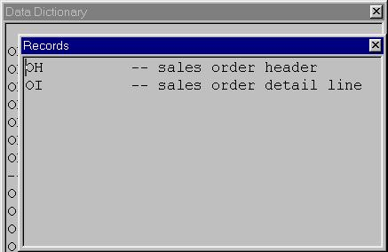
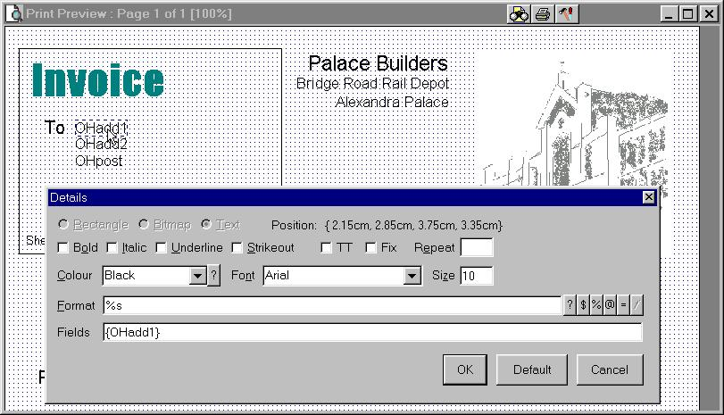

The following interacting components are required to create a report:
The contents of the datastream are specified in datadict.txt. For example:
--
-- Example data dictionary.
-- =======================
-- Each record must begin with a unique two-character identifier.
--
OH -- sales order header
OHadd1 %s -- address line 1
OHadd2 %s -- address line 2
OHpost %s -- postcode
OHdate %s -- order date
OHacc %s -- account number
OHtot %9.2f -- order total
OI -- sales order detail line
OIprod %s -- product code
OIdesc %s -- description
OIqty %8.3f -- quantity
OIpri %8.2f -- price
OInet %8.2f -- net
OIvat %8.2f -- VAT
OItot %8.2f -- total
This file is created by the application developer and should not be modified by the end user, however they should understand the contents before attempting to modify an existing report. It is of course perfectly acceptable and relatively straightforward for an application developer to programatically create datadict.txt from existing data definitions in their application, though bear in mind that the comments, as shown above, are actually the most useful part of this file.
Each record begins with a two-character identifier and is followed by a number of fields each of which begins with the same two-character identifier, the field name, and a default field format.
The above corresponds to the report application passing a structure similar to the following to the report generator:
{{"OH", "Sunshine Garden Centre","14-18 Durnsford Road","N22 7YD",
"02/01/2003","217765",2041.56},
{"OI", "TGS-GM-22-04", "Spade - 22inch GardenMaster s/steel",
250, 6.95, 1737.50, 304.06, 2041.56}
}
All comments and blank lines in datadict.txt, except for initial comments preceding the first blank line, are displayed in the field lookup during report definition:
Previous ScreenShot Next ScreenShot

Dictionary Lookup.
The field format follows those used in printf:
| %d | an integer | %x | hexadecimal | %o | octal |
|---|---|---|---|---|---|
| %f | floating point | %e | floating point in scientific notation | ||
| %s | string | %g | most appropriate of %e or %f |
Field width and precision can be specified between the % and the format letter, eg %8.2f indicates a floating point number with a minimum field width of 8 characters and a precision of 2 (ie two decimal places).
The following characters may immediately follow the % character:
The default field format does not dictate the contents of the datastream as created by the application program and can be overidden on each field in the report layout.
Tip: use short format qualifiers (eg %s) to left-align fields. Long format (eg %20s, %9.2f) right-align fields, provided that no fields are longer than the format specified. (See Faq:alignment.) There is also a copy of the sprintf documentation from Euphoria here.
Wherever possible, fields defined in datadict.txt should be simple text strings or atomic values. The report generator can subscript and slice but not iterate over a variable length item (See FAQ:appfunc): it expects each element of a repeating structure to be passed as a distinct record. Complex structures obviously also invite future maintenance overheads.
The routine loadDDict() is used to load the contents of datadict.txt into the layouts.edb file, alternatively this can be run manually from pptest.exw. See the section on Upgrade below[DEV: not in v0.1] for further details.
Record type comments should be defined inline, so they appear as follows:
Previous ScreenShot Next ScreenShot

Record Lookup.
Report Layouts are created visually using the report layout designer, which allows:
Boxes and lines, in any colour, pen width, or style (Solid, Dash, DashDot, etc).
Bitmap graphics, resized, optionally greyscaled, in any paintmode (SrcCopy, SrcPaint, etc - refer to Microsoft for details).
Fixed text, datastream and calculated fields, in any face, size, and colour, and with any standard text attributes (Bold, Italic, etc).
Advanced features including repeating fields, variant handling, and calculated fields are discussed at length in the Reference Section.
Previous ScreenShot Next ScreenShot

Layout Amendment.
The field under the cursor can be edited by double clicking on it, dragged to a new position, deleted by dragging off the paper, or resized by selecting from the right click popup menu. New fields can also be created anywhere on the paper by selecting Insert from the right click popup menu.
Dictionary, standard, calculated, and summation fields, can be selected by pressing F1 to F4 respectively or using the first four buttons to the right of the Format field. The format string is coped automatically, and the field name and any required brackets and commas inserted in the Fields list. F5 or the fifth button is used to define new calculated fields. This is covered in greater detail later in the Reference section.
A short tutorial demonstrating the features of the layout designer can be run from pptest.exw (or pptest.exe).
If you have any ideas for additional lessons, please let me know.
The source of the tutorial program is released unshrouded. It may require some changes to work on screen resolutions other than 1024x768. The tutorial may be amended to work with a standard report from your application, if required. If you make any changes, please send me a copy of the entire amended source (it is much easier for me to merge a complete source, please don't waste time composing an "insert at line 210", "replace line 327" style list, I will only throw it away and ask for the complete source). Obviously I will apply your changes (within reason) so you don't have to when the next version is released, or at least limit them to setting a single flag from 0 to 1 or vice versa.
The tutorial runs on top of the live software, it is not a recording. Hence you can experiment a little, but try to put the screen back as it was (and return focus to the Tutorial popup) before continuing.
Please note that layouts.edb should not be excessively modified before running the tutorial, and that pressing various keys, using the mouse, or switching tasks while a demo is running are all likely to cause an abort (the title of the Tutorial window changes to eg Hlt @ 4/17). This is to prevent the tutorial inadvertently passing keystrokes or mouse events to other applications. Once Hlt @ n/nn has appeared it is usually best to exit pptest.exw completely before attempting to restart the tutorial.
The application creates a datastream and passes it to the report generator. This is a simple sequence of records, where each record begins with a fixed two character identifier and is followed by fields as specified in datadict.txt. All records of a particular type must be the same fixed length. For example:
{{"OH", "Sunshine Garden Centre","14-18 Durnsford Road","N22 7YD",
"02/01/2003","217765",2041.56},
{"OI", "TGS-GM-22-04", "Spade - 22inch GardenMaster s/steel",
250, 6.95, 1737.50, 304.06, 2041.56}
}
Some of this data is a straight copy of data held on file, other fields can be calculated and/or pre-formatted in an application-specific manner.
The most important consideration is that the datastream should logically match the required printing process. It is also sensible to put all the readily available fields that might ever be used into the datastream as this allows clients to make small changes to reports without amending the source code.
The application must sort records as required when creating the datastream.
The report generator checks the first item in each record is a two-character string corresponding to a record definition in the data dictionary, and that the record has the correct length.
In the example above, OHpost is the fourth line of the OH definition, (skipping any blank/comment-only lines), so to print that field the report generator simply takes the fourth entry (counting the "OH" as 1) from the record.
Appropriate care must be taken that fields in the data dictionary do not get out of step with those created by the application program. The getDDidx() function can be used to return an index value for checking during datastream creation, eg:
if getDDidx("OHtot")!=7 then error() end if -- assertion
-- or --
if rec[getDDidx("OHtot")]!=my_order_total then error() end if
If passed a two-character string, getDDidx returns the record length. If the parameter is not recognised or has been deleted, -1 is returned. Naturally it is unwise to use getDDidx("xx") to create a record of the correct length and then mis-populate it/fill in only half of it, it is much more sensible to code eg
record=repeat(0,7)
..fill in 7 fields..
if getDDidx("OH")!=length(record) then error() end if
Since that clearly delineates (for future maintenance) the lines of code which
must be updated.
A single record can also be displayed for quick visual checking. An example of this can be seen in pptest.exw.
Once the application has created the datastream, it simply invokes the report generator, eg:
generateReport("invoice", datastream, pFlags)
Where "invoice" is a layout previously specified using the report layout designer, datastream is as just explained, and pFlags is 0, or one or more of:
| PP_DESIGNMODE | (#01) | Amend the layout. Note that datastream is unused, and any other flags specified are ignored. |
| PP_NOPREVIEW | (#02) | Disables print preview, prints the report immediately. Not honoured when in design mode, naturally. |
| PP_QUIETMODE | (#06) | Disables print preview and suppresses Printer dialogue. |
| WARNING: user will not be able to change the printer, number of copies, etc. | ||
| PP_TUTORIAL | (#07) | An automated demonstration of features. |
Multiple PP_ flags can be passed as a sequence or combined via or_all(). [not relevant in v0.1; more flags are planned for later versions] Sharp eyed readers may have noticed that a value of #04 will logically show the preview, but suppress the printer dialogue. This is not officially supported.
The default behaviour when 0 is passed to pFlags is:
Before calling generateReport, the calling application should pass a routine_id to onClose_pprg(). This is called to formally hand back focus to the application when the print preview window is closed. Without this routine, the calling application has no way of knowing when the report has finished (or been cancelled). Naturally, the calling application's WinMain window should not be closed until that point. An example of this can be seen in pptest.exw (actually pptwin.ew).
Table of Contents Previous Page - Introduction Next Page - Licence